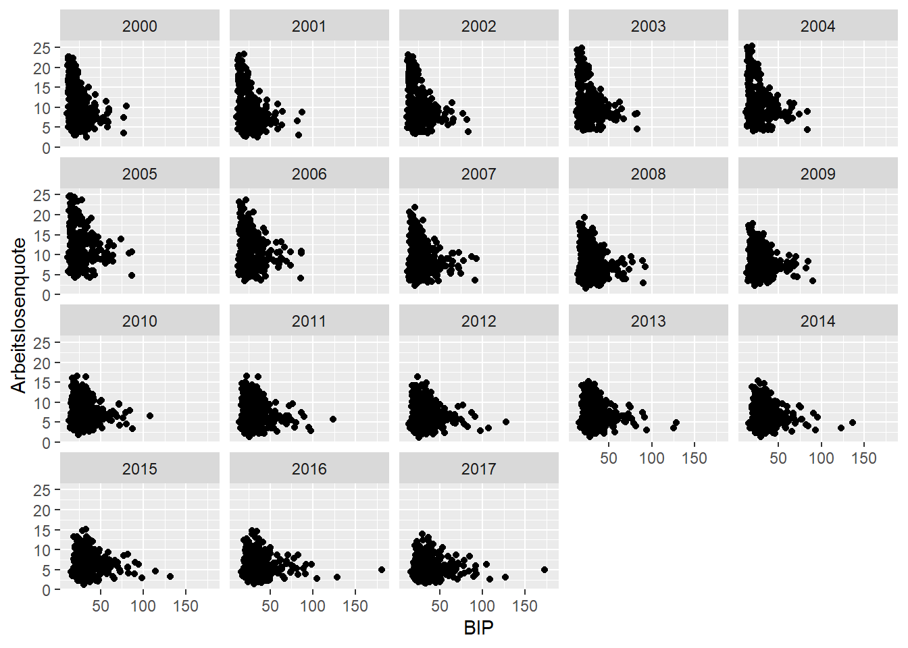
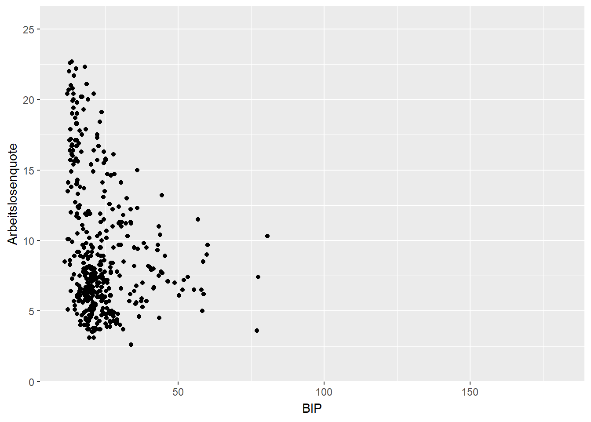
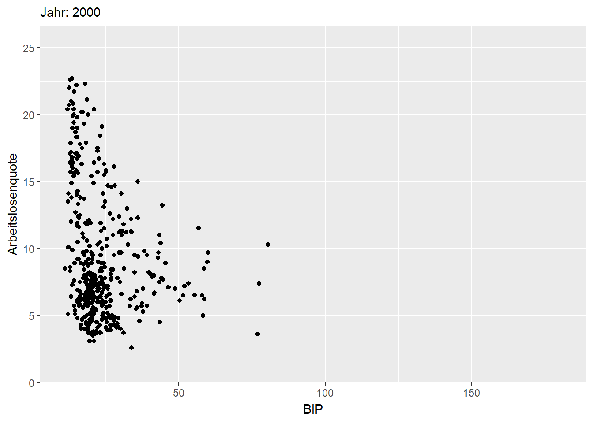
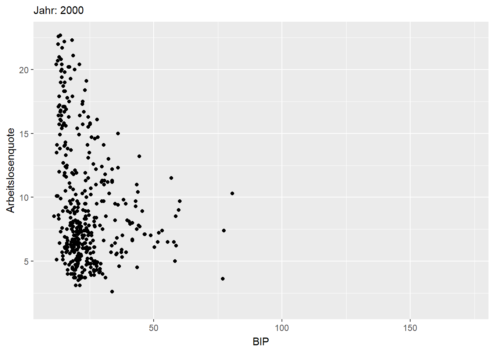
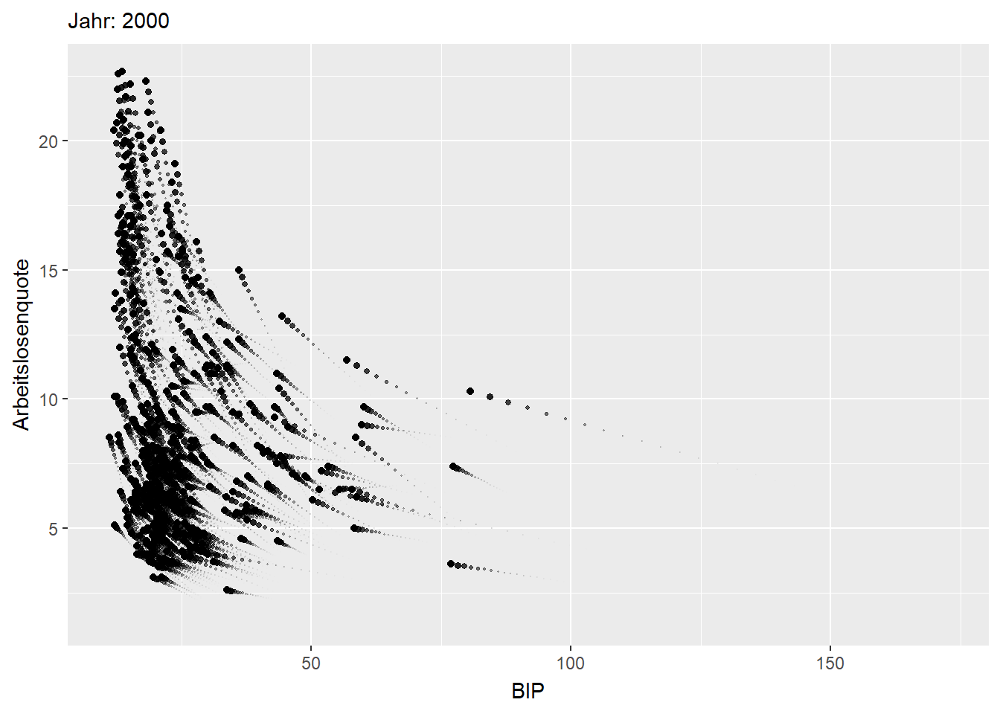
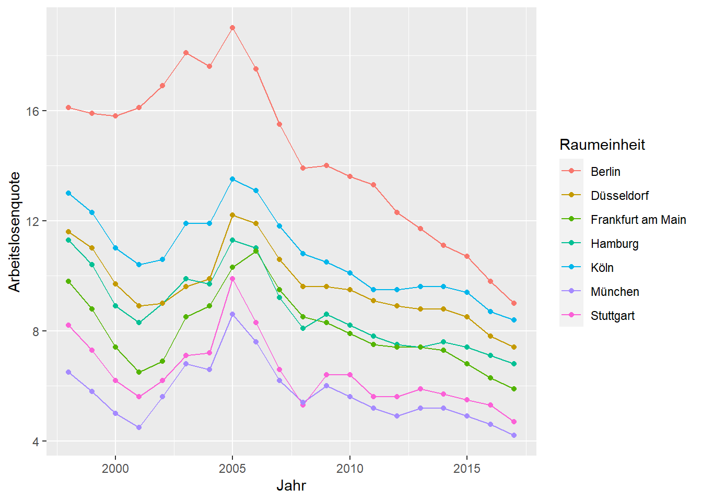
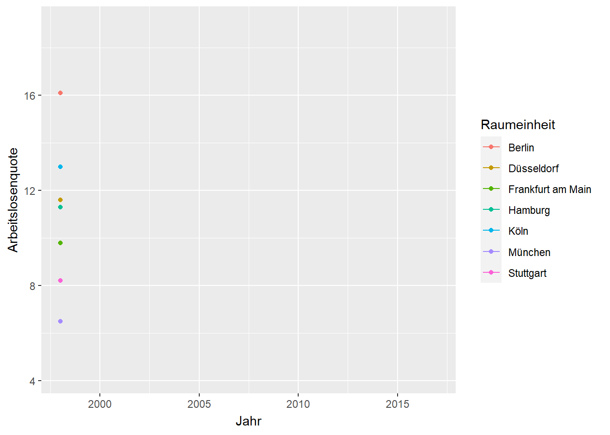
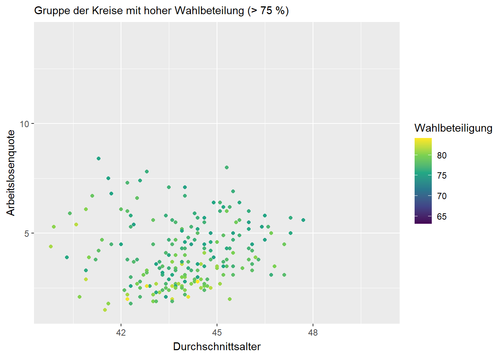

Animationen
Ziele der Sitzung
- Erstellen von Animationen
Die Visualisierung von Daten ist ein wichtiges Instrument in der Kommunikation von Forschungsergebnissen. Statische Abbildungen sind in 99 % der Arbeit der angebrachte Weg. Wissenschaftliche Papiere sind eben immer noch weitestgehend für das Papierformat gedacht. Schon lange weden Forschungsergebnisse jedoch auch online veröffentlicht. Für die Einbettung auf Websites und insbesondere auch in Social-Media-Kanälen bieten animierte Abbildungen eine alternative zu statischen Abbildungen.
- Warum Animationen?
Mit animierten Abbildungen lassen sich insbesondere Zustandsveränderungen eindrucksvoll darstellen.
Zustandsveränderungen können zum Beispiel Veränderungen einer Variable über die Zeit sein.
Ein weiteres Beispiel könnte die Visualisierung einer Regression sein, in der die Gruppenzugehörigkeit für ein Individuum geschätzt wird. Die Animation könnte Differenzen zwischen tatsächlicher und im Modell geschätzter Zugehörigkeit visualisieren.
Auch Simulationsergebnissen könnten in spannender Weise visualisiert werden. Eine Animation könnte die Simulationsergebnisse für verschiedene Modellparameter darstellen.
Wie bei der Visualisierung statischer Abbildungen, setzt auch bei Animationen lediglich die Fantasie die Grenzen, solange einige Grundprinzipien in der Datenstruktur beachtet werden.
- Grundidee

Die Grundidee bei der Erstellung von Animationen ist die, dass für jeden Animationszustand, zum Beispiel Zeitpunkt, eine eigene Abbildung erstellt wird. Grundvoraussetzung dafür ist, lediglich ein sauberes Datenformat. Soll beispielsweise der Zusammenhang von BIP pro Kopf und Arbeitslosenquote im Zeitverlauf für verschiedene Länder dargestellt werden braucht es genau vier Spalten: (1) BIP pro Kopf (2) Arbeitslosenquote (3) Jahr <-- Animationszustand (4) Land.
Das Paket gganimate übernimmt das (fast) alles.
Die Wahl des geom entspricht dabei in der Regel der Wahl, wenn nur eine statische Abbildung für einen Zeitpunkt erstellt würde.
Benötigte Pakete
library(tidyverse)
library(gganimate)Daten laden
library(readr)
(Landkreise_merged <- read_csv("daten_beispiele/Landkreise_merged.csv")
)## # A tibble: 9,223 x 9
## Kennziffer Raumeinheit Aggregat Jahr Arbeitslosenquo~ Wahlbeteiligung
## <chr> <chr> <chr> <dbl> <dbl> <dbl>
## 1 01001 Flensburg,~ krsfr. ~ 1998 14.6 75.8
## 2 01001 Flensburg,~ krsfr. ~ 1999 13 NA
## 3 01001 Flensburg,~ krsfr. ~ 2000 11.8 NA
## 4 01001 Flensburg,~ krsfr. ~ 2001 12.1 NA
## 5 01001 Flensburg,~ krsfr. ~ 2002 12.1 73.9
## 6 01001 Flensburg,~ krsfr. ~ 2003 13.7 NA
## 7 01001 Flensburg,~ krsfr. ~ 2004 14 NA
## 8 01001 Flensburg,~ krsfr. ~ 2005 18.3 72
## 9 01001 Flensburg,~ krsfr. ~ 2006 15.4 NA
## 10 01001 Flensburg,~ krsfr. ~ 2007 12.5 NA
## # ... with 9,213 more rows, and 3 more variables: Durchschnittsalter <dbl>,
## # BIP <dbl>, Stadt_Land <dbl>Wir animieren die Entwicklung der Beziehung zwischen Arbeitslosenquote und BIP über die Zeit in den 401 Kreisen. Eigentlich reihen wir also die gleiche Abbildung für verschiedene Jahre hintereinander. Statisch also:
Landkreise_merged %>%
filter(!is.na(BIP)) %>%
filter(!is.na(Arbeitslosenquote)) %>%
ggplot(aes(x = BIP, y = Arbeitslosenquote)) +
geom_point() +
facet_wrap(~Jahr)
(1) Zustände mit transition_states()
In der Minimalversion müssen wir nur eine Zeile ändern. In transition_states wird der Animationszustand eingefügt, in unserem Fall die Beobachtungsjahre.
Landkreise_merged %>%
filter(!is.na(BIP)) %>%
filter(!is.na(Arbeitslosenquote)) %>%
ggplot(aes(x = BIP, y = Arbeitslosenquote)) +
geom_point() +
transition_states(states = Jahr) 
Dynamische Beschriftungen mit {closest_state}
AHA! Es bewegt sich was! Wir wissen allerdings nicht wirklich, was sich tut. Um besser zu verstehen, was die verschiedenen Zustände darstellen, können wir dynamische Labels verwenden. Innerhalb der geschweiften Klammern wird dann der jeweilige Animationszustand angezeigt. {closest_state} kann zum Beispiel in die (Unter)überschrift einer Abbildung eingefügt werden. Das Schöne an gganimate ist es, dass die ggplot weitestgehend übernommen werden kann.
Landkreise_merged %>%
filter(!is.na(BIP)) %>%
filter(!is.na(Arbeitslosenquote)) %>%
ggplot(aes(x = BIP, y = Arbeitslosenquote)) +
geom_point() +
transition_states(states = Jahr) +
labs(subtitle = "Jahr: {closest_state}") #<--nimmt Werte aus states-Argument vom transition_states()
Die Übergänge sind noch etwas zittrig. Die Übergangszeiten lassen sich als Argumente von transtion_states() anpassen. transtion_length gibt die relative Zeit der Animation an, die für Übergänge verwendet werden soll und transtion_lenth die Zeit, die für die Zustände verwendet wird. Deutlich wird die Funktionsweise, wenn wir weniger Zustände nutzen.
Landkreise_merged %>%
filter(Jahr %in% c(2000, 2017)) %>% #nur auf Start und Endjahr filtern
ggplot(aes(x = BIP, y = Arbeitslosenquote)) +
geom_point() +
transition_states(states = Jahr,
transition_length = 9, #9/10 der Zeit für Übergänge
state_length = 1) + #1/10 für Zustände
labs(subtitle = "Jahr: {closest_state}") #<--nimmt Werte aus states-Argument vom transition_states()
Übergänge gestalten mit ease_aes()
Mit ease_aes() lassen sich Übergänge noch ansprechender gestalten. Standardmäßig sind die Übergänge linear. Es stehen aber zahlreiche andere Optionen zur Verfügung, wie z.B. elastic, bounce oder exponential.
Zusätzlich können die Übergänge durch ein Suffix weiter angepasst werden. Dabei gibt es drei Optionen, von denen mindestens eine gewählt werden muss.
-inStandardfall.-outUmgekehrtes Verhalten.-in-outIn der ersten Hälfte des Übergangs Standardfall, in der zweiten umgekehrt.
Landkreise_merged %>%
filter(Jahr %in% c(2000, 2017)) %>% #nur auf Start und Endjahr filtern
ggplot(aes(x = BIP, y = Arbeitslosenquote)) +
geom_point() +
transition_states(states = Jahr) +
ease_aes("elastic-in") + # hüpfgummiartiges Verhalten
labs(subtitle = "Jahr: {closest_state}") #<--nimmt Werte aus states-Argument vom transition_states()Vorherige Datenpunkte anzeigen mit shadow_
Um die Übergänge zwischen den Zuständen für die einzelnen Beobachtungen noch deutlicher zu machen, kann eine Art Spur vom alten Animationszustand zum neuen gezeichnet werden, die mit der Zeit verlischt.
Neben der Standardoption (kein Spur) gibt es drei shadow_-Optionen:
shadow_null(): Standard, keine Spur.shadow_mark(): Zeigt einzelne Animationszustände. Sowohl vergangene als auch zukünftige Zustände können angezeigt werden.shadow_trail(): Zeigt die Spur zwischen den Animationszuständen brotkrumenartig an. Der Weg wird durch einzelne Frames nachgezeichnet.shadow_wake(): Die Punkte ziehen auf dem Weg zwischen den Animationszustände eine Heckwelle hinter sich her. Sieht am ehesten aus wie ein Schatten.
Die verschiedenen shadow_-Optionen enthalten wiederum eine Vielzahl an Anpassungsmöglichkeiten.
Landkreise_merged %>%
filter(Jahr %in% c(2000, 2017)) %>% #nur auf Start und Endjahr filtern
ggplot(aes(x = BIP, y = Arbeitslosenquote)) +
geom_point() +
transition_states(states = Jahr) +
shadow_wake(wake_length = 0.2) + # "Schatten"" zwischen Animationszuständen
labs(subtitle = "Jahr: {closest_state}") #<--nimmt Werte aus states-Argument vom transition_states()
(2) Datenpunkte Aufdecken mit transition_reveal()
Mit transition_reveal() lassen sich Datenpunkte über die Zeit aufdecken und somit klassiche Liniendiagramme mit der Zeit auf der x-Achse animieren. Wir zeigen das mit der Entwicklung der Arbeitslosenquote in den sieben größten deutschen Städten. Statisch:
Landkreise_merged %>%
filter(!is.na(Arbeitslosenquote)) %>%
filter(Raumeinheit %in% c("Berlin, Stadt", "Stuttgart, Stadt", "Düsseldorf, Stadt", "Hamburg, Stadt", "Frankfurt am Main, Stadt", "München, Stadt", "Köln, Stadt")) %>%
mutate(Raumeinheit = gsub("(.*),.*", "\\1", Raumeinheit)) %>% #Text ab Komma entfernen, optional
ggplot(aes(x = Jahr, y = Arbeitslosenquote, color = Raumeinheit)) +
geom_line() +
geom_point() 
Um die Werte nach und nach aufzudecken braucht es nur einer zusätzlichen Zeile. Hier wird lediglich Jahr als Option angegeben, entlang derer die Datenpunkte aufgedeckt werden sollen.
Landkreise_merged %>%
filter(!is.na(Arbeitslosenquote)) %>%
filter(Raumeinheit %in% c("Berlin, Stadt", "Stuttgart, Stadt", "Düsseldorf, Stadt", "Hamburg, Stadt", "Frankfurt am Main, Stadt", "München, Stadt", "Köln, Stadt")) %>%
mutate(Raumeinheit = gsub("(.*),.*", "\\1", Raumeinheit)) %>% #Text ab Komma entfernen, optional
ggplot(aes(x = Jahr, y = Arbeitslosenquote, color = Raumeinheit)) +
geom_line() +
geom_point() +
transition_reveal(along = Jahr) 
- Unterschiede zwischen Gruppen mit
transition_filter()
- Unterschiede zwischen Gruppen mit
transition_filter() lässt uns dynamische Übergänge zwischen Gruppen darstellen. Auch hier können wir wieder dynamische Labels nutzen, um Überblick über die dargestellten Gruppen zu behalten. {closest_filter} übernimmt die Gruppen, die wir in transition_filter() definieren.
Im Folgenden stellen wir den Zusammenhang zwischen Durchschnittsalter und Arbeitslosenquote im Jahr 2017 entlang dreier Gruppen dar. Die Gruppen ergeben sich aus der Wahlbeteiligung.
Landkreise_merged %>%
filter(Jahr == 2017) %>% #nur auf Jahr 2017 filtern
ggplot(aes(x = Durchschnittsalter, y = Arbeitslosenquote, color = Wahlbeteiligung)) +
geom_point() +
scale_color_viridis_c() + #ein bisschen Farbe
transition_filter("hoher Wahlbeteilung (> 75 %)" = Wahlbeteiligung > 75,
"mittlerer Wahlbeteiligung (70-75 %)" = Wahlbeteiligung <= 75 & Wahlbeteiligung >= 70,
"niedriger Wahlbeteilung (< 70 %)" = Wahlbeteiligung < 70) +
labs(subtitle = "Gruppe der Kreise mit {closest_filter}") #<--nimmt Werte aus states-Argument vom transition_filter()
Erscheinen und Verschwinden mit enter_ und exit_
Wir haben die obigen Gruppen exklusiv definiert. Kein Kreis taucht doppelt auf. In solchen Fällen bietet es sich an, diese Trennung durch Übergänge klarer zu machen.
Das Erscheinen und Verschwinden wird mit den enter_ und exit_-Varianten definiert. Beispiele sind enter_grow() oder enter_recolor() und die jeweiligen Partnerversionen für das Verschwinden.
Die verschiedenen Optionen lassen sich fast beliebig kombinieren.
Landkreise_merged %>%
filter(Jahr == 2017) %>% #nur auf Jahr 2017 filtern
ggplot(aes(x = Durchschnittsalter, y = Arbeitslosenquote, color = Wahlbeteiligung)) +
geom_point() +
scale_color_viridis_c() + #ein bisschen Farbe
transition_filter("hoher Wahlbeteilung (> 75 %)" = Wahlbeteiligung > 75,
"mittlerer Wahlbeteiligung (70-75 %)" = Wahlbeteiligung <= 75 & Wahlbeteiligung >= 70,
"niedriger Wahlbeteilung (< 70 %)" = Wahlbeteiligung < 70) +
labs(subtitle = "Gruppe der Kreise mit {closest_filter}") + #<--nimmt Werte aus states-Argument vom transition_filter()
enter_fly(x_loc = 0, y_loc = 100) + # Erscheinen: einfliegen von links oben
exit_fly( x_loc = 100, y_loc = 0) # Verschwinden: rausfliegen nach rechts untenSpeichern einer Animation
Um eine Animation zu speichern, weisen wir zunächst unsere Animation einem gganimate-Objekt zu.
super_fancy_animation <- Landkreise_merged %>%
filter(Jahr == 2017) %>% #nur auf Jahr 2017 filtern
ggplot(aes(x = Durchschnittsalter, y = Arbeitslosenquote, color = Wahlbeteiligung)) +
geom_point() +
scale_color_viridis_c() + #ein bisschen Farbe
transition_filter("hoher Wahlbeteilung (> 75 %)" = Wahlbeteiligung > 75,
"mittlerer Wahlbeteiligung (70-75 %)" = Wahlbeteiligung <= 75 & Wahlbeteiligung >= 70,
"niedriger Wahlbeteilung (< 70 %)" = Wahlbeteiligung < 70) +
labs(subtitle = "Gruppe der Kreise mit {closest_filter}") + #<--nimmt Werte aus states-Argument vom transition_filter()
enter_fly(x_loc = 0, y_loc = 20) + # Erscheinen: einfliegen von links oben
exit_fly(x_loc = 60, y_loc = 0) # Verschwinden: rausfliegen nach rechts untenDanach passen wir noch einige Details der Animation an. Mit nframes bestimmen wir die Gesamtzahl der Frames und mit fps die Frames pro Sekunde. Aus der Kombination der beiden ergibt sich die Gesamtdauer der Animation
# adjust the animation settings
animate(super_fancy_animation,
width = 600, # 600px breit
height = 400, # 400px hoch
nframes = 150, # insgesamt 100 Frames
fps = 10) # 10 Frames pro Sekunde --> Gesamte Laufzeit: 15 SekundenMit anim_save() speichern wir schließlich die letzte Animation und geben der Datei einen Namen. Und dann? Ab auf Twitter & Co. damit!
anim_save("meine_super_fancy_animation.gif")